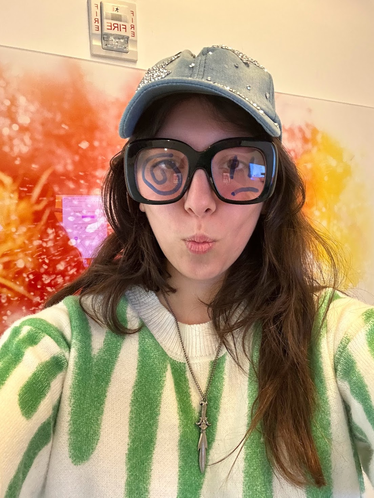

LOADING...
How far am I from THE SOURCE

This is a body of text that I'm writing. I'm writing this body of text.
This is precious information. I think the information is precious. I
think it's precious because it is today's diary entry. Life is about
beautiful things and beautiful people. If you think the world looks
good, guess what: It does. It's not anybody's fault that love is the
only thought and pain is the only feeling. If you ask me, that doesn't
sound like such a bad situation. Existence is innocent, plеase don't try
to think otherwise. At this point, I feel like I'm almost one hundred
percent pure angel. People need to stop trying to be cool and they need
to start trying to be hot. Because, remember, the enemy is yourself
posed as a question. I'm not exactly sure how to write about love or
life in a way better than that song. I'm not sure what kinda of
vulnerable text I could write in here that would make this website worth
visiting for you. I want to make it worth visiting to you. Do you miss
me? Do you love me? Did I love you? Is love realy the only thought. I
can apply it to pretty much every instance of any action I've ever taken
or not taken, especially if you count the absence of thinking about love
as technically thinking about love. I saw something like if you walk
into a room and something isn't there, but that's all you can think
about, then it kinda is there. I hate seeing myself one way and having
other people see me another way. Although, most times I believe this is
to my benefit. I try to confess as much as possible, even though I heard
that's pretty much the opposite of what you're supposed to do. The
compulsion feels too good to let go of, the freedom of living without
secret, without burden, without anything really... I appreciate it. I
think I'm one of the few people that wants to know the future exactly.
Because I don't think it would change anything for me. I think very few
things would change my given circumstances (emotionally). Everyday I
wake up and want to be better, I want to make art, I want to spread
love, I want to eat a really good sandwich. I want to meet everyone in
the world. The superpower I would choose to have if I could have any
would be to possess the ability to communicate with any creature. I have
the opportunity to learn a new language for free at the UN, and I don't
know which langauge to pick. I don't know what door of the universe to
open up for myself and my loved ones. I guess if I had infinite money,
I'd just fund bigger projects for myself, buy a big house for all my
friends, and spend all day learning languages.